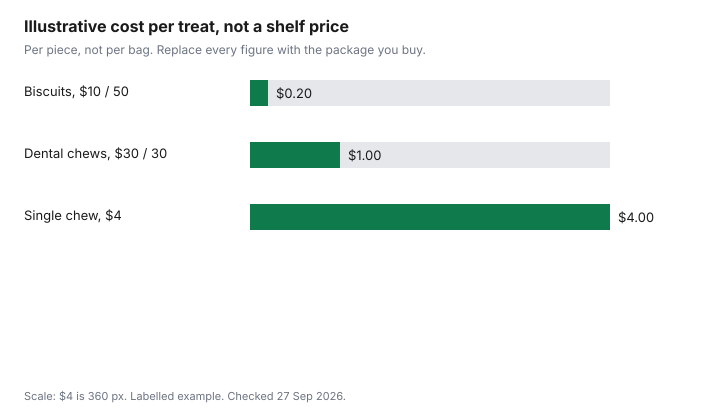

Pets · Canada
Dog Treats and Chews on a Budget in Canada: Unit Prices and Safe DIY Options
To budget dog treats in Canada, divide the package price by the count. In a labelled example, a biscuit costs $0.20, a dental chew $1.00, and a single chew $4.00. Keep chocolate, grapes, onion, garlic and xylitol out of homemade treats. Treats are how a careful food budget leaks. The bag of kibble was divided per day. The chew at the checkout was not. This page is the unit price, the dental-seal question, and the people-food list you should not bake into a homemade biscuit. No Canadian chew price was checked 27 Sep 2026. The chart is a labelled example. The toxic-food table is the ASPCA list, not a dose chart. Education only. This is not veterinary advice and not a product ranking.
Key takeaways
- Price per treat is the package price divided by the count. Price per kilogram still matters when the pieces are not the same size. No shelf price is listed here.
- In a labelled example, $10 for 50 biscuits is $0.20 each, $30 for 30 dental chews is $1.00 each, and a $4 single chew is $4.00.
- The Veterinary Oral Health Council does not test products itself. The seal is for plaque, calculus, or both, when the product is used as directed. Brushing is the gold standard on that site.
- ASPCA Poison Control lists chocolate, grapes and raisins, onion, garlic, chives, xylitol, macadamia nuts, alcohol, and yeast dough among foods to avoid. No safe dose is printed here.
- Treat calories count toward the day. This page does not set a percent of calories. Ask your veterinarian. Not veterinary advice.
Unit prices: per kg and per treat
Two divisions, and they answer different questions. Price per treat is the price you pay divided by the number of pieces in the package.
Price per kilogram is the price divided by the kilograms, and it is the fairer comparison when one “treat” is a thumbnail and another is a shin bone. A bargain bag of tiny biscuits can be expensive per kilogram and cheap per piece. A single bully stick can be the opposite. Write both, then decide which one matches how you actually hand them out. If you give one a day, the per-piece price is the daily leak. If you snap one chew into four, write four, not one.
Labelled example, not a shelf price. Biscuits: $10 for 50 is $0.20 each. Dental chews: $30 for 30 is $1.00 each. A chew sold alone at $4.00 is $4.00. One a day, the biscuit example is $6.00 a month at 30 days (0.20 × 30). The dental-chew example is $30.00. The single chew is $120.00. Those are not store prices. They are what “one a day” does to a piece price. The food cost-per-day guide is the bowl. Add the treat line beside it or you will understate the month. The dog cost guide prints OVMA toy figures ($83 in the puppy year, $82 on the adult page). Those are toys, not chews. Do not file a dental chew under the toy line and forget it.
Dental chews: VOHC acceptance and cost per chew
The Veterinary Oral Health Council’s site, checked 27 Sep 2026, says the council does not test products itself. It reviews data submitted for its standards for plaque and tartar control when the product is used as directed.
The seal can be for plaque, calculus, or both. The same page says excellent oral health is maintained by daily oral hygiene, that the gold standard is brushing, and that daily use of products with the seal helps keep teeth clean. It also says two practical ways to reduce obstructions from chews: give the size that matches the dog’s body weight, and give the chew when someone is there to watch. A seal is not a promise that every chew in the aisle was reviewed. A product without a seal was not, on that page, declared useless. No product is required to submit. This page does not name a winner.
Cost per chew is still the package price divided by the count, and only the chews the dog actually finishes. A $1.00 illustrative chew that is dropped under the couch is not $1.00 of dental care. The dental cost guide is the clinic cleaning, which is a different bill from a chew. Do not subtract a chew from a dentistry estimate. The emergency vet guide is the visit you hope a swallowed chew does not become. Supervise, as the VOHC page says, instead of learning that lesson from an invoice.
Safe DIY treats and ingredients to avoid
A homemade biscuit is not automatically safer or cheaper. It is cheaper only after you price the flour, the egg, the oven time you choose not to meter, and the pieces you throw out.
It is safer only if every ingredient is one you would feed on purpose and none is on the avoid list below. This page does not publish a recipe. A recipe would pretend a veterinary clearance this guide does not have. If you bake, use ingredients your veterinarian has already said are fine for this dog, in amounts that fit the day’s calories, and skip the experiment if the dog has a disease diet.
The avoid list is from ASPCA Poison Control’s “People Foods to Avoid Feeding Your Pets,” checked 27 Sep 2026. It tells you to note the amount and call a veterinarian or the poison-control number printed on that page, (888) 426-4435, if you suspect an exposure. That number is the ASPCA’s. It is not a provincial telehealth line. Chocolate, coffee, and caffeine can cause vomiting, diarrhea, panting, thirst, hyperactivity, abnormal heart rhythm, tremors, seizures, and death; darker chocolate is the higher concern on that page. Grapes and raisins: tartaric acid is described as the speculated toxic component, and exposure can lead to kidney damage. Onion, garlic, and chives can cause gastrointestinal irritation and red-blood-cell damage; cats are more susceptible, and dogs are at risk depending on the amount. Xylitol, in gum, candy, baked goods, and toothpaste, can cause low blood sugar and potentially liver damage. Macadamia nuts can cause weakness, incoordination, vomiting, tremors, and hyperthermia in dogs. Alcohol and yeast dough can cause alcohol toxicity, and dough can bloat. Raw meat, raw eggs, and bones carry bacteria, and bones can obstruct. No milligram dose is copied, because the page cited here does not give one you should use at home.
| Food | What that page says |
|---|---|
| Chocolate, coffee, caffeine | Methylxanthines. Darker chocolate is the higher concern. Can affect heart rhythm and cause seizures. |
| Grapes and raisins | Tartaric acid is the speculated component. Exposure can lead to kidney damage. |
| Onion, garlic, chives | Gastrointestinal irritation and red-blood-cell damage. Risk depends on the amount. Cats are more susceptible. |
| Xylitol | Low blood sugar and potential liver damage. Named in gum, candy, baked goods, and toothpaste. |
| Macadamia nuts | Weakness, incoordination, vomiting, tremors, and hyperthermia in dogs. |
| Alcohol and yeast dough | Alcohol toxicity. Dough can rise in the stomach and bloat. |
| Raw meat, raw eggs, bones | Bacteria such as Salmonella and E. coli. Bones can obstruct or injure. |
Treat calories and portioning
A treat is food. If the biscuit bag prints kilocalories, divide by the number of biscuits and add that to the day’s calories from the bowl.
If it does not print kilocalories, you cannot do the addition honestly. Do not invent a calorie count from a blog. The fresh-food guide makes the same point about a topper: extra calories you did not subtract from the bowl are not a swap. This page does not print a rule such as “ten percent of calories,” because no veterinary page cited here sets that fraction for every dog. Ask the clinic what share of this dog’s calories treats may be, especially if the dog is already heavy.
Portioning is also how the unit price survives contact with a generous family. If three people each give “just one,” the $0.20 illustrative biscuit is $0.60, and the month is triple the worksheet. Write who is allowed to hand them out. A training session that uses twenty tiny pieces is cheaper than one dental chew only when you counted the twenty. The vet-bill guide is the visit if a weight problem or a bad stomach becomes a bill. It is not a diet plan.
Bulk and store-brand options
Bulk is a lower price per kilogram or per piece, if you will use the bag before it is stale and before you are bored of it. A store brand is the same division, not a health ranking.
No store-brand treat price was checked 27 Sep 2026. A larger bag that pushes you to give more, because the tub is open on the counter, raises the month even when the piece price fell. Close the tub. The piece price only counts the pieces that leave the tub on purpose.
Dental chews in bulk still need the size on the VOHC-style warning: the right size for the dog, and someone watching. A case of the wrong size is not a saving. Neither is a chew you buy because the unit price was low and the dog cannot finish it without gulping. Stop at the package that matches the dog you have.
Worksheet
| Format | Price | Count | Per piece | 30 days, one a day |
|---|---|---|---|---|
| Illustrative biscuits | $10 | 50 | $0.20 | $6.00 |
| Illustrative dental chews | $30 | 30 | $1.00 | $30.00 |
| Illustrative single chew | $4 | 1 | $4.00 | $120.00 |
| Your biscuits | ||||
| Your dental chew |

Sources & date stamps
- Veterinary Oral Health Council, vohc.org, checked 27 Sep 2026. The council reviews submitted data and does not test products itself. Seal for plaque, calculus, or both. Brushing described as the gold standard. Size and supervision noted for chews.
- ASPCA, People Foods to Avoid Feeding Your Pets, checked 27 Sep 2026. Chocolate, grapes and raisins, allium vegetables, xylitol, macadamia nuts, alcohol, yeast dough, raw meat, eggs, and bones, as summarized in the table. Poison-control number printed on that page: (888) 426-4435.
- No treat or chew shelf price was checked 27 Sep 2026. Illustrative piece prices are arithmetic only.
Frequently asked questions
How can I save money on dog treats?
Divide the package price by the number of pieces, and by the kilograms when the pieces are different sizes, then give fewer pieces, or smaller pieces, on purpose, and do not leave the tub where every passerby hands one out. No shelf price was checked 27 Sep 2026. In a labelled example, $10 for 50 biscuits is $0.20 each and $6.00 over 30 days at one a day. A store brand wins only after the same division.
Are dental chews worth it?
Worth is the price per chew you actually use, plus whether you are buying a product whose maker submitted data for a VOHC seal, plus whether you still brush. The VOHC site says it does not test products itself, that the seal can be for plaque, calculus, or both, and that brushing is the gold standard. It also says to match the chew to body weight and to watch the dog. This page does not name a chew and does not subtract a chew from a dentistry bill.
What homemade treats are safe for dogs?
This page does not publish a recipe and does not clear an ingredient. Safe, here, means you left out the foods on the ASPCA list: chocolate and caffeine, grapes and raisins, onion, garlic, chives, xylitol, macadamia nuts, alcohol, yeast dough, and raw meat, eggs, and bones. Use only ingredients your veterinarian has already accepted for this dog. A homemade biscuit still has calories and still has a cost once you price what went into it.
How many treats per day?
No veterinary page cited here gives a daily count or calorie percent, so none is printed, and you can add the kilocalories on the treat package to the food calories only if the package prints them. If the package does not print kilocalories, you cannot do that sum honestly. Ask your veterinarian what share of this dog’s calories treats may be. Three people each giving one treat is three treats, so write that down.
Which foods are toxic to dogs?
The ASPCA page checked 27 Sep 2026 tells owners to avoid chocolate, coffee, and caffeine; grapes and raisins; onion, garlic, and chives; xylitol; macadamia nuts; alcohol and yeast dough; and raw meat, raw eggs, and bones. It says to note the amount and contact a veterinarian or the poison-control number printed there, (888) 426-4435. That is not a complete list of every plant in a Canadian house, and it is not a dose you should calculate at the kitchen counter. This is not veterinary advice.
Researched and drafted with AI assistance and fact-checked against official Canadian sources. How we create content.
Disclosure: Amazon.ca storefront categories are an offer type. Saving Optimizer may earn a commission if we later add a partner link. We do not currently claim an Amazon partnership. Education only. This is not veterinary advice. A storefront link does not change the arithmetic.